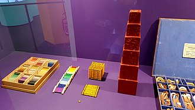
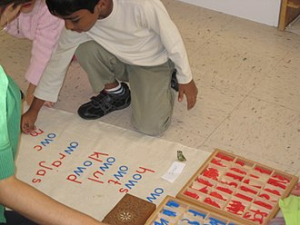
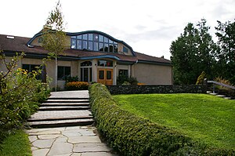
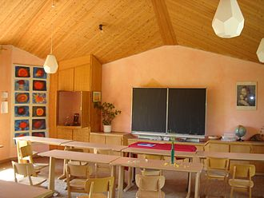
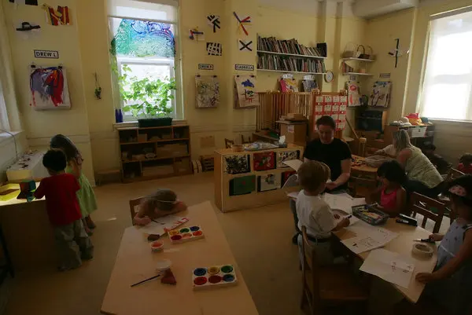

Materiale educaționale tradiționale Montessori
expuse la expoziția „Designed for children”
la Triennale di Milano, Milano
- Montessori
Ce este educația Montessori?
Montessori este o metodă de educație numită după Dr. Maria Montessori. A fost prima femeie din Italia care a obținut
titlul de doctor în medicină. Pentru că era medic, Maria Montessori a privit educația de la nivel științific.
Ea credea că educația ar trebui să pregătească o persoană pentru toate aspectele vieții. Ea a conceput materiale și
tehnici care ar promova o creștere naturală a învățării la elevi. Sunt comune tuturor sălilor de clasă Montessori.
Lucrul cu aceste materiale și tehnici formează un model pe care copiii îl transferă în mod natural la citire,
scriere și matematică. Fiecare abilitate este dezvoltată pentru a se interconecta cu alta.

Copii care lucrează cu un alfabet mobil la o
școală Montessori
De la Societatea Americană Montessori:
Metoda Montessori de educație, dezvoltată de Dr. Maria Montessori, este o abordare educațională centrată pe copil
bazată pe observații științifice ale copiilor de la naștere până la vârsta adultă. Metoda Dr. Montessori a fost testată
în timp, cu peste 100 de ani de succes în diverse culturi din întreaga lume.
Este o viziune asupra copilului ca acela care este în mod natural dornic de cunoaștere și capabil să inițieze învățarea
într-un mediu de învățare pregătit și susținător. Este o abordare care pune în valoare spiritul uman și dezvoltarea
întregului copil – fizic, social, emoțional, cognitiv.
Educația Montessori oferă copiilor noștri oportunități de a-și dezvolta potențialul pe măsură ce ies în lume ca
cetățeni implicați, competenți, responsabili și respectuoși, cu înțelegerea și aprecierea că învățarea este pentru viață.
- Fiecare copil este apreciat ca un individ unic. Educația Montessori recunoaște că copiii învață în moduri diferite și
se adaptează la toate stilurile de învățare. Elevii sunt, de asemenea, liberi să învețe în
propriul ritm, fiecare avansând prin curriculum pe măsură ce este gata, ghidat de profesor și un plan de învățare individualizat.
-
Începând de la o vârstă fragedă, elevii Montessori dezvoltă ordinea, coordonarea, concentrarea și independența.
Designul sălii de clasă, materialele și rutinele zilnice susțin „autoreglarea” emergentă a individului
(capacitatea de a se educa și de a se gândi la ceea ce învață), copiii mici prin adolescenți.
-
Elevii fac parte dintr-o comunitate apropiată și grijulie. Sala de clasă cu mai multe vârste – care se întinde
de obicei pe 3 ani – recreează o structură de familie. Elevii mai mari se bucură de statură ca mentori și modele
de urmat; copiii mai mici se simt sprijiniți și câștigă încredere în provocările care le urmează. Profesorii
modelează respect, bunătate iubitoare și credința în rezolvarea pașnică a conflictelor.
-
Elevii Montessori se bucură de libertate în limite. Lucrând în cadrul parametrilor stabiliți de profesorii lor,
elevii sunt participanți activi în a decide care va fi obiectivul lor de învățare. Montessorienii înțeleg că
satisfacția internă stimulează curiozitatea și interesul copilului și are ca rezultat o învățare fericită care
este sustenabilă de-a lungul vieții.
-
Elevii sunt sprijiniți să devină căutători activi de cunoștințe. Profesorii oferă medii în care elevii au
libertatea și instrumentele pentru a găsi răspunsuri la propriile întrebări.
-
Autocorecția și autoevaluarea sunt o parte integrantă a abordării clasei Montessori. Pe măsură ce
se maturizează, elevii învață să privească cu critică munca lor și devin adepți să recunoască, să corecteze și
să învețe din erorile lor.

Hawthorne Valley Waldorf School, Ghent,
New York
- Waldorf
Ce este educatia Waldorf?
Educația Waldorf este o mișcare școlară independentă la nivel mondial dezvoltată în Europa cu aproape 100 de ani în
urmă de către filozoful, reformatorul social și vizionarul austriac, Rudolf Steiner. Astăzi, învățământul Waldorf
este reprezentat pe tot globul, cu aproximativ 1000 de școli și aproape 2000 de programe pentru copilărie în peste 60
de țări. În educația Waldorf, procesul de învățare este în esență triplu, captivant cap, inimă și mâini - sau gândirea,
simțirea și acțiunea. Aceasta este baza pe care profesorii Waldorf lucrează pentru a hrăni și a implica fiecare copil
printr-un curriculum și o metodologie care integrează mediul academic, artele și abilitățile practice.
Deși educația Waldorf a fost disponibilă în SUA din 1928, odată cu înființarea Școlii Rudolf Steiner din New York City,
nu a fost niciodată deosebit de cunoscută aici. Dar cu nemulțumirea tot mai mare față de testarea cu mize mari care
consumă în prezent educația de masă; recunoașterea din ce în ce mai mare a numeroaselor beneficii pe care le primește un
copil prin experiențele cu arta, mișcarea și natura; o preocupare cu privire la dependența de tehnologie a studenților
din ce în ce mai tineri; și vestea că liderii din industria high-tech promovează beneficiile pe tot parcursul vieții
ale școlilor Waldorf low-tech în educarea propriilor copii, din ce în ce mai mulți părinți și educatori analizează mai
atent abordarea Waldorf și ceea ce are de oferit.

Sala de clasă a școlii primare Waldorf
Fundamentele educației Waldorf
Educația Waldorf începe cu premisa că copilăria este alcătuită din trei etape distincte de aproximativ șapte ani
fiecare - de la naștere până la șapte ani (copilărie timpurie), șapte până la 14 ani (copilărie mijlocie) și 14 până la
21 de ani (adolescență). Fiecare etapă modelează felul în care copiii simt și abordează lumea – din punct de vedere
intelectual, emoțional, fizic și spiritual – care, la rândul său, modelează modul în care învață. Educatorii Waldorf
consideră că programele și metodele de predare ar trebui adaptate în mod corespunzător acestor etape de dezvoltare,
fiecare evoluând pe măsură ce copilăria se desfășoară.
Copilăria timpurie – Dezvoltați membrele prin acțiune
Copiii mici de la naștere până la vârsta de șapte ani trăiesc în primul rând prin simțuri și învață cel mai bine prin
imitație. Străduindu-se să fie niște figuri demne de imitat, educatorii Waldorf pentru copii timpurii hrănesc înflorirea
fiecărui copil, oferind medii blânde, dar bogate senzoriale și activități bazate pe joacă, care încurajează copilul mic
să investigheze lumea naturală, să exploreze relațiile sociale și să extindă capacitățile imaginative. Aceste activități
pun bazele cruciale pentru dezvoltarea intelectuală, emoțională și fizică.
Copilăria mijlocie – Dezvoltați inima prin imaginație
Între șapte și 14 ani, copiii învață cel mai bine prin lecții care le ating sentimentele și le revigorează forțele
creative. Curriculum-ul Waldorf este plin de basme și fabule, saga mitologice și biografii emoționante ale personajelor
istorice. Profesorii Waldorf elementare (sau „clasa”) integrează povestirea, drama, mișcarea ritmică, artele vizuale și
muzica în munca lor zilnică, țesând o tapiserie de experiență care aduce fiecare subiect la viață în gândirea,
sentimentul și voința copilului. Încredințați sarcina esențială de a-și însoți elevii într-o călătorie de câțiva ani,
profesorii din clasele 1-8 Waldorf au un rol analog cu cel de părinte eficient, ghidând învățarea academică formală a
copiilor, trezindu-le în același timp dezvoltarea morală și creșterea conștientizării locului lor. în lume.
Adolescența – Dezvoltați mintea prin discernământul lumii
Vârstele între 14 și 21 de ani marchează dezvoltarea intelectului independent și, odată cu acesta, capacitatea de a
examina lumea în mod abstract și de a exercita discernământ, judecată și gândire critică. Elevilor din liceele Waldorf
li se oferă o autonomie din ce în ce mai mare în ceea ce privește educația lor, sub îndrumarea unor profesori care sunt
specialiști în domeniile lor.
- Constructivism
Ce este constructivismul?
Teoria învățării constructivismului (CLT) funcționează pe principiul că elevii participă activ la învățarea bazată pe
descoperire, bazându-se pe cunoștințele existente pentru a învăța concepte noi. Constructivismul privește învățarea ca
fiind atât actul de a construi și, dacă ar fi o clădire în sine, cu cunoștințele anterioare formând o fundație pe care
să se construiască.
Profesorii și educatorii pot folosi această abordare în mod eficient, ajutând elevii să înțeleagă mai bine conceptele pe
care le-au învățat deja, relaționându-le cu experiențele lor de zi cu zi pentru a ajuta noile lecții să rezoneze.
Constructivismul își are rădăcinile în revoluția cognitivă din anii 1950 ca o mișcare intelectuală de studiere a minții
și a diferitelor sale procese. Constructivismul este o reacție la behaviorism; anterior, abordarea dominantă se concentra
doar pe comportamentul observabil, nu pe procesul de gândire „ascuns”.
Constructivismul a cuprins lideri de gândire și teoreticieni din discipline atât de variate precum psihologia,
antropologia, lingvistica, neuroștiința, informatica și filozofia. Figura principală a constructivismului cognitiv,
în ceea ce privește educația, a fost psihologul elvețian Jean Piaget. Piaget a teoretizat că oamenii învață conectându-și
experiențele cu ideile care le sunt prezentate. Munca sa s-a concentrat în mare măsură pe dezvoltarea cognitivă a copiilor și modul în care aceștia învață, spre deosebire de ceea ce le influențează învățarea.
5 etape ale constructivismului
Conform teoriei constructivismului, cinci etape cuprind CLT. Fiecare dintre aceste etape se construiește una peste alta,
formând un cadru logic pentru a continua să se bazeze pe învățările unui elev. Cele cinci etape ale constructivismului
sunt: invitarea la idei, explorare, propunere, explicație și soluție și acțiune.
- Idei invitatoare: Cunoscută uneori ca etapa de implicare, această etapă implică un educator care pune o întrebare
sau o situație pe care elevul să o ia în considerare, cerându-i să-și folosească propriile rezerve de cunoștințe.
Elevul începe apoi să formuleze o opinie sau o idee cu privire la informațiile noi care îi sunt prezentate.
- Explorare: În etapa de explorare, elevii construiesc noi cunoștințe în mod activ, participând la o experiență
interactivă cu conceptul care le este prezentat. Acest lucru poate implica elevii și profesorii să discute
întrebarea sau scenariul pus în etapa de implicare.
- Propunere: În etapa de propunere, elevii discută ceea ce au învățat sau orice observații făcute pe baza
angajamentului lor inițial și a ideilor noi care au apărut în timpul discuțiilor. Profesorul joacă un rol de
sprijin, ajutându-i să-și articuleze gândurile dacă este necesar. Cu toate acestea, această etapă este critică
pentru ca elevul să demonstreze înțelegerea conceptului.
- Explicație și soluție: Etapa de explicație este uneori denumită etapa de elaborare. Elevii pot vorbi despre
procesele lor de gândire și pot avea un dialog cu profesorul lor. La rândul său, profesorul poate aborda orice
concepții greșite sau neînțelegeri, adaptând lecția într-un mod care să-l ajute pe elev să înțeleagă mai bine un
concept bazat pe învățările anterioare.
- Acțiunea: Denumită uneori faza de evaluare, acțiunea implică profesorii să le solicite elevilor să își sintetizeze
procesul cognitiv pe tot parcursul și cum s-au schimbat gândurile lor de la faza inițială a ideilor invitatoare.
Acest lucru le permite elevilor să aplice noi învățăminte în timp ce examinează modul în care percepțiile lor
inițiale au evoluat de-a lungul celor cinci etape, pe baza unor noi interacțiuni, discuții și rezolvare de
probleme.
- Reggio Emilia
Ce este educatia Reggio Emilia?

Abordarea Reggio Emilia este o filozofie și o pedagogie educațională axată pe învățământul preșcolar și primar. Această
abordare este un curriculum auto-dirijat centrat pe elev și constructivist, care utilizează învățarea auto-dirijată,
experiențială în medii bazate pe relații.Programul se bazează pe principiile respectului, responsabilității și
comunității prin explorare, descoperire și joacă.
La baza acestei filozofii se află presupunerea că copiii își formează propria personalitate în primii ani de dezvoltare
și că sunt înzestrați cu „o sută de limbi”, prin care își pot exprima ideile. Scopul abordării Reggio este de a-i învăța
pe copii cum să folosească aceste limbaje simbolice (de exemplu, pictură, sculptură, teatru) în viața de zi cu zi.
Această abordare a fost dezvoltată după al Doilea Război Mondial de către pedagogistul Loris Malaguzzi și părinții din
satele din jurul Reggio Emilia, Italia; abordarea își trage numele de la oraș.
Filozofia
Filosofia Reggio Emilia se bazează pe următorul set de principii:
- Copiii trebuie să aibă un anumit control asupra direcției învățării lor;
- Copiii trebuie să fie capabili să învețe prin experiențe de atingere, mișcare, ascultare și observare;
- Copiii au o relație cu alți copii și cu obiecte materiale din lume pe care trebuie să li se permită să le exploreze;
- Copiii trebuie să aibă nenumărate moduri și oportunități de a se exprima.
Abordarea de la Reggio Emilia a predării copiilor mici pune dezvoltarea naturală a copiilor, precum și relațiile
apropiate pe care aceștia le împărtășesc cu mediul lor în centrul filozofiei sale.Fundamentul abordării Reggio
Emilia constă în viziunea sa unică asupra copilului: promovarea educației celor mai mici elevi pentru a promova cea
ai bună integrare posibilă între „100 de limbi” ale copiilor.În această abordare, există convingerea că copiii
au drepturi și ar trebui să li se ofere oportunități de a-și dezvolta potențialul. Copiii sunt considerați „purtători
de cunoștințe”, așa că sunt încurajați să-și împărtășească gândurile și ideile despre tot ceea ce ar putea întâlni
sau face în timpul zilei. „Influențat de această credință, copilul este văzut ca fiind frumos, puternic, competent,
creativ, curios și plin de dorințe potențiale și ambițioase.”Copilul este văzut ca fiind un constructor activ de
cunoaștere. Mai degrabă decât să fie văzut ca ținta instruirii, copiii sunt văzuți ca având rolul activ al unui
ucenic.Acest rol se extinde și la cel al unui cercetător.O mare parte a instruirii la școlile din Reggio Emilia are
loc sub formă de proiecte în care au oportunități de a explorați, observați, formulați ipoteze, puneți la îndoială și
discutați pentru a clarifica înțelegerea lor.Copiii sunt, de asemenea, priviți ca ființe sociale și se pune
accent pe copil în relație cu alți copii, familie, profesori și comunitate, mai degrabă decât asupra fiecărui copil
în mod izolat.Ei sunt învățați că respectul pentru toți ceilalți este important, deoarece fiecare este o „agenție
subiectivă”, în timp ce există ca parte a unui grup.
Abordarea de la Reggio Emilia a educației timpurii reflectă o rudenie teoretică cu John Dewey, Jean Piaget,
Lev Vygotsky și Jerome Bruner, printre alții. Mare parte din ceea ce se întâmplă în clasă reflectă o abordare
constructivistă a educației timpurii. Abordarea lui Reggio Emilia provoacă unele concepții despre competența
profesorului și practica adecvată pentru dezvoltare. De exemplu, profesorii din Reggio Emilia afirmă importanța de a
fi confuzi ca un factor care contribuie la învățare; astfel, o strategie de predare majoră este să permită greșelilor
să se întâmple sau să înceapă un proiect fără a avea un sens clar unde s-ar putea termina. O altă caracteristică care
este contrară credințelor multor educatori occidentali este importanța capacității copilului de a negocia în grupul de
colegi.
Unul dintre cele mai provocatoare aspecte ale abordării Reggio Emilia este solicitarea mai multor puncte de vedere cu
privire la nevoile, interesele și abilitățile copiilor, precum și credința concomitentă în părinți, profesori și copii
pentru a contribui în moduri semnificative la determinarea experiențelor școlare. . Profesorii au încredere în ei
înșiși să răspundă în mod adecvat ideilor și intereselor copiilor, au încredere că copiii vor fi interesați de lucruri
despre care merită să știe și au încredere că părinții vor fi membri informați și productivi ai unei echipe
educaționale cooperante. Rezultatul este o atmosferă de comunitate și colaborare care este adecvată pentru dezvoltare
atât pentru adulți, cât și pentru copii.